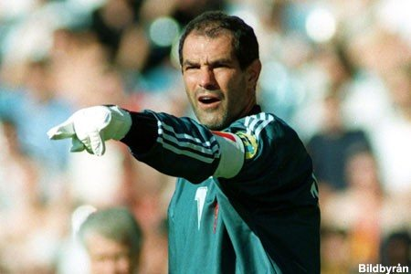

Большую часть карьеры провёл в «Барселоне», с которой 6 раз выигрывал чемпионский титул, 2 раза — Кубок Испании. Также в составе «Барселоны» Гвардиола выиграл Кубок европейских чемпионов в 1992 году, Кубок обладателей кубков в 1997 году, а также дважды выигрывал Суперкубок Европы. В 2001 году Гвардиола покинул «Барселону», перебравшись в Италию («Рома», «Брешиа»)
Хосеп Гвардиола
Карлес Пуйоль
С 17 лет воспитывался в академии «Барселоны». В составе первой команды дебютировал в 1999 году, а в 2004 году получил капитанскую повязку от Луиса Энрике. Всего же за пятнадцать сезонов в составе «каталонцев» Пуйоль завоевал шесть титулов чемпиона Испании, два Кубка Испании, шесть Суперкубков Испании и три Лиги чемпионов УЕФА. Кроме того, в активе защитника две победы в Суперкубке Европы, а также два титула чемпиона мира среди клубов. Три раза входил в символическую сборную мира по версии ФИФА (2007, 2008, 2010) и шесть раз в символическую сборную Европы по версии УЕФА (2002, 2005, 2006, 2008, 2009, 2010). Лучший защитник Европы в 2006 году.

Роналдиньо
Бразильский нападающий родился в Порту-Алегри (Бразилия) в 1980 году. Пять сезонов проведенных в клубе он стал одним из величайших игроков клуба и сделал решающий вклад в победу в Лиге чемпионов и в двух чемпионатах Испании.

Андони Субисаррета
Субисаррета (Витория, 1961) был одним из лучшей вратарей в истории не только «Барселоны», но и Испании в целом.Он является рекордсменом по количеству матчей в Примере — 622 матча. До мая 2015 года был ещё и рекордсменом по количеству побед в матчах Примеры — 333 победы.

Рональд Куман
Куман всегда будете получать упоминания в истории «Барселоны» он забил важнейший гол, который подарил победу «Барсе» в 1992 году в Кубоке европейских чемпионов на «Уэмбли».